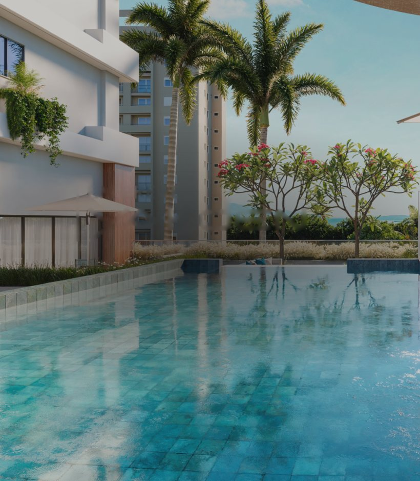
Cadastre-se para mais informações
Yarden
Maringá · Gleba Itororó
Onde a natureza encontra a sofisticação.
O Yarden é um convite à pausa, ao equilíbrio e à vida com mais significado. Um empreendimento que traduz o encontro entre o bem-estar e a estética refinada, onde cada espaço foi idealizado para conectar pessoas ao que realmente importa. Aqui, conforto, privacidade e contemplação caminham juntos, proporcionando uma experiência que inspira leveza, presença e sofisticação no dia a dia.
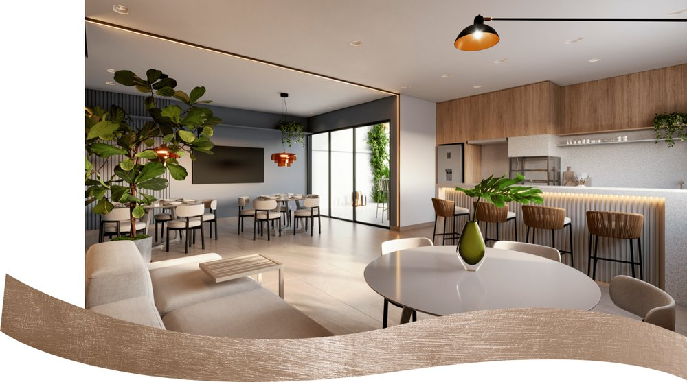
Lazer completo em dois níveis.
Desfrute de momentos com toda a família em espaços pensados para o seu bem-estar — do térreo ao rooftop, do relaxamento à convivência.
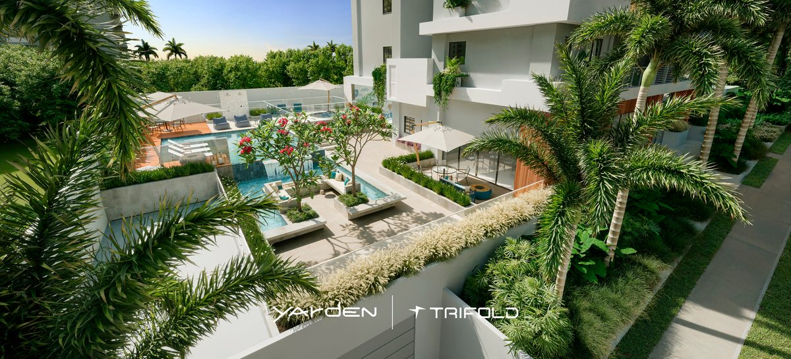
Conheça os ambientes do Yarden.
Renders oficiais das áreas comuns — térreo e rooftop — e do apartamento decorado. Clique em qualquer foto para ampliar.
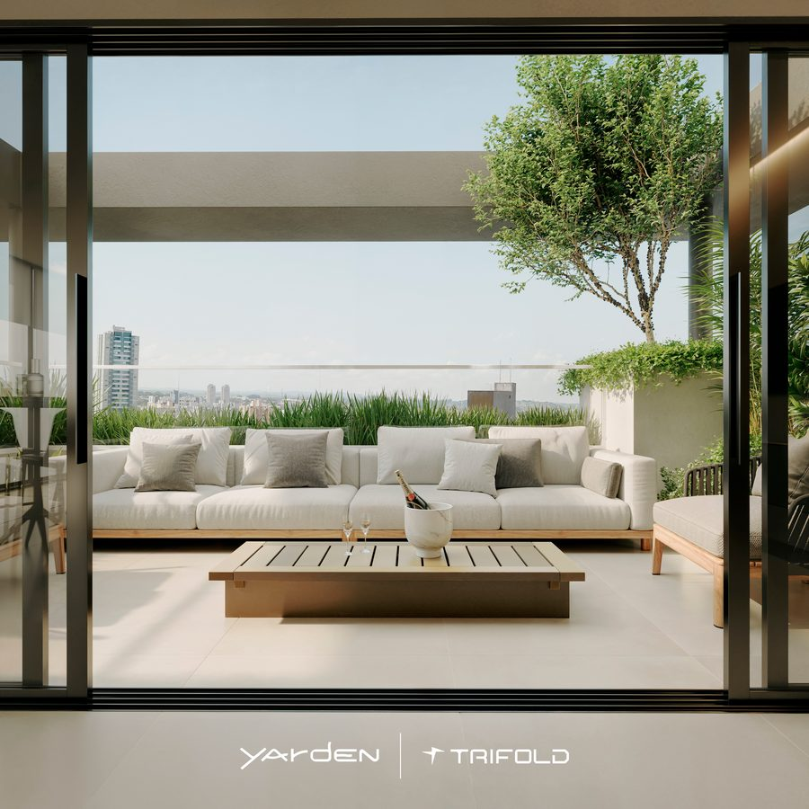
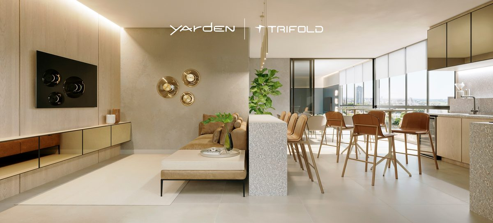
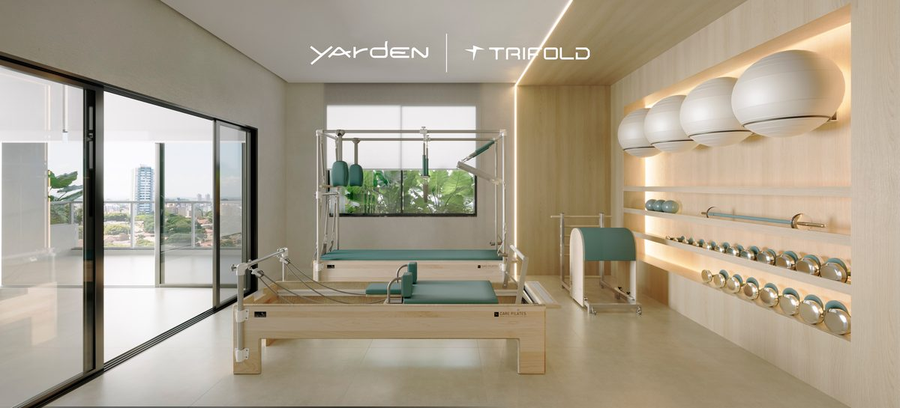
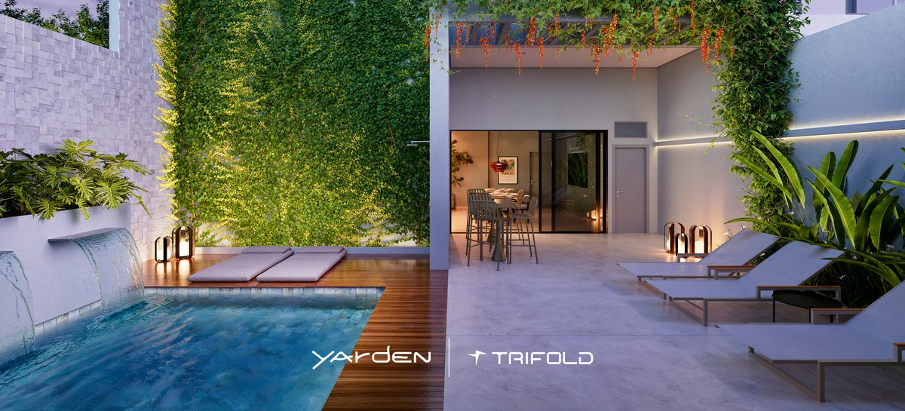
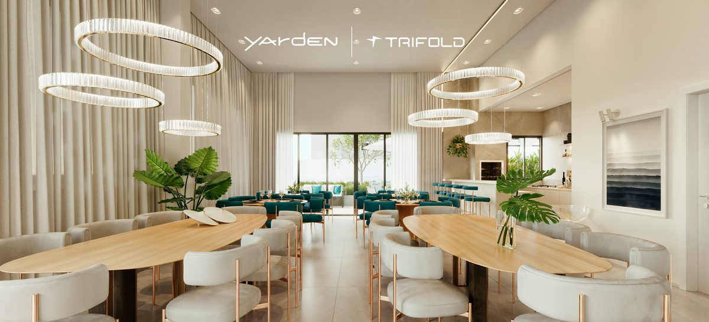
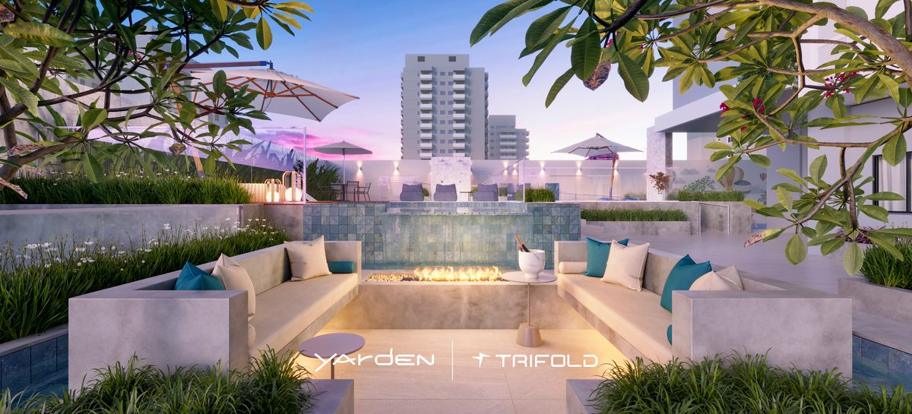
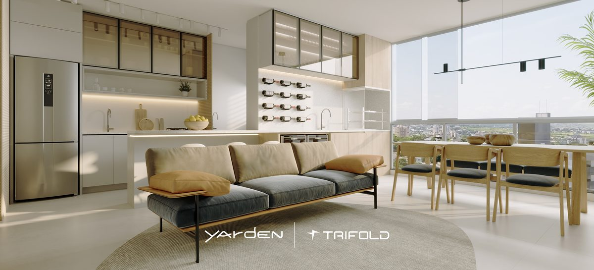
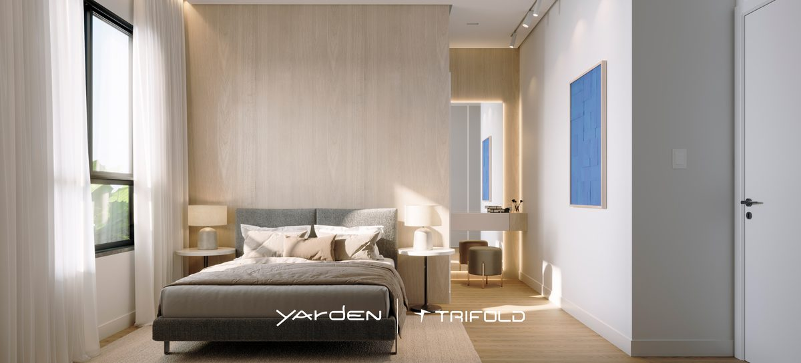
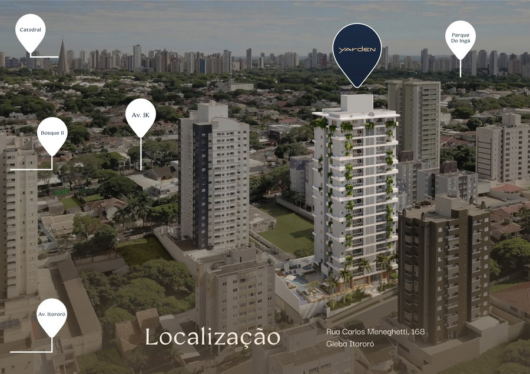
Invista no novo centro urbano de Maringá.
Mais do que uma localização valorizada, a Gleba Itororó se tornou símbolo de um novo jeito de viver em Maringá. Um bairro planejado, moderno e muito promissor. Quem escolhe investir, escolhe estar no centro do que vem para transformar o jeito de se morar, com sofisticação, conveniência e valorização garantida.
Rua Carlos Meneghetti, 168 — Gleba Itororó, Maringá
- Catedral
- Parque do Ingá
- Av. JK
- Bosque II
- Av. Itororó
Quer conhecer o Yarden de perto?
Deixe seu contato e receba informações exclusivas sobre o empreendimento.
Cadastre-se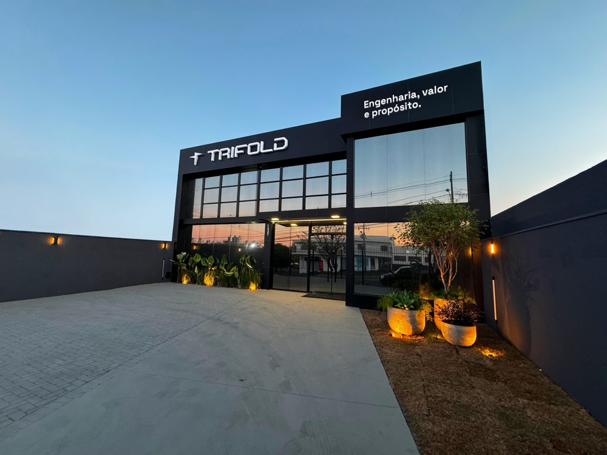
Referência no conceito de morar bem
Fundada em 2019 com a união de uma equipe experiente — atuante em conjunto no mercado desde 1997 — a Trifold trabalha na orçamentação e execução de obras residenciais, comerciais, industriais e hospitalares, além da incorporação e execução de empreendimentos próprios que reúnem alta qualidade.
Quer saber mais?
Deixe seu contato e receba informações exclusivas
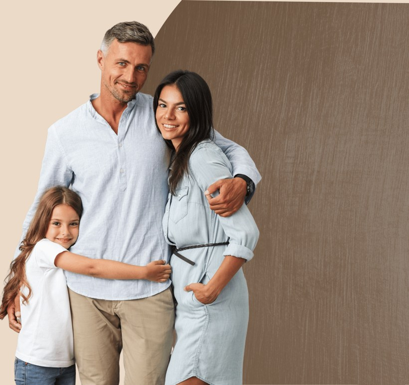